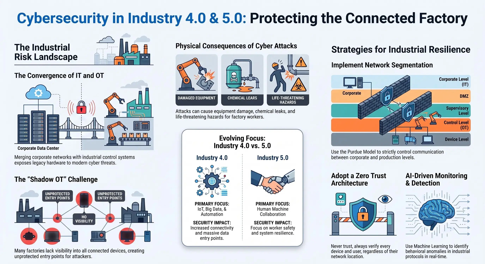

Cybersecurity Services
Сигурност на индустриални (OT/ICS) мрежи
Помогаме на производствените и OT среди да ограничат риска — чрез изолиране, наблюдение на трафика и ясен план при инцидент.

Когато IT срещне производство
Какво включва OT/ICS сигурността
Работим с IT/OT границата — сегментация, наблюдение и подготовка, като се позоваваме и на статията ни за индустриална киберсигурност и решението за производство.
- Сегментация на IT/OTРазделяне на офисната и технологичната мрежа с контролирани точки на връзка.
- Наблюдение на индустриален трафикДетекция на аномалии по ICS протоколи без намеса в реалния процес.
- Оценка на рисковетеПреглед на достъпи, стари системи и уязвими места в OT средата.
- План за реакцияПроцедури при инцидент, съобразени с непрекъснатостта на производството.
Често задавани въпроси
OT/ICS сигурност
Различава ли се OT от обикновената ИТ сигурност?
Да — приоритетът е непрекъснатостта и безопасността на физическия процес, затова намесите и тестовете се планират по-внимателно.
Ще спре ли производството по време на работа?
Планираме работа в уговорени прозорци и по възможност пасивно наблюдение, за да не прекъсваме технологичния процес; конкретните стъпки се уговарят писмено.
Обхват и оферта
Как се формира OT/ICS офертата
Обхватът (вид технологии, брой PLC/SCADA системи, ниво на наблюдение и готовност за реакция) се уговаря писмено след запознаване с производството.
За индивидуална оценка — заявете консултация.